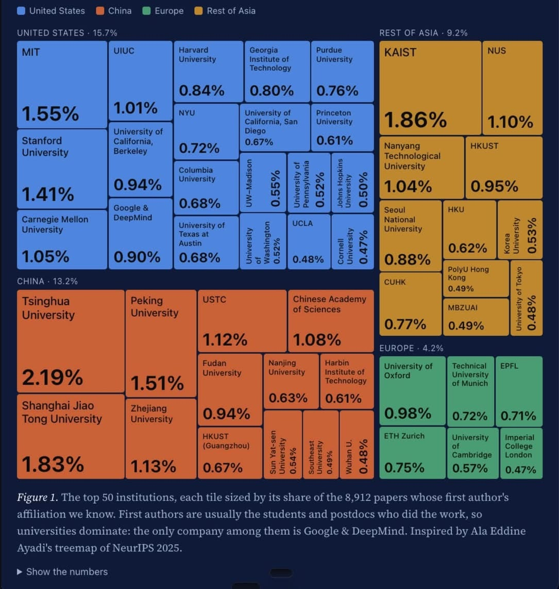

전세계 AI 연구의 최전선으로 뽑히는 NeurIPS 2026의 합격논문의 기관 순위가 공개됨.
(NeurIPS는 트랜스포머 등 현대 AI 기술들이 최초로 공개된 세계최정상 학회임. 여기서 공개된 연구와 기술이 향후 AI 구현방향을 결정한다고 보면 됨.)
1. 중국 칭화대
2. 한국 카이스트
3. 중국 상해교통대
4. 미국 MIT
5. 중국 북경대

전세계 AI 연구의 최전선으로 뽑히는 NeurIPS 2026의 합격논문의 기관 순위가 공개됨.
(NeurIPS는 트랜스포머 등 현대 AI 기술들이 최초로 공개된 세계최정상 학회임. 여기서 공개된 연구와 기술이 향후 AI 구현방향을 결정한다고 보면 됨.)
1. 중국 칭화대
2. 한국 카이스트
3. 중국 상해교통대
4. 미국 MIT
5. 중국 북경대
논문의 질이 아닌 논문의 수량.. 순위..
뉴립스 붙은 논문들의 질은 보장됐다고 보면 됨
오 질높은 논문의 수량 순위!
뉴립스는 AI학회 top tier 중에서도 top tier임
뉴진스하고는 다르네
마이 다른갑네
아무튼 화이팅
중국 체급 좆대네
크 자랑스럽네 좋은연구 많이 하는듯
중국 ㅅㅂ
한국 3.27 홍콩 2.83 싱가폴 2.14 아랍에미리트 0.49 일본 0.48
영국 2.02 스위스 1.46 독일 0.72
홍콩 싱가폴 뭔데 ㄷㄷ
싱가폴도 괴물임. 홍콩은 사실상 중국이고
우리나란 미중에 비하면 진짜 티끌만큼 투자하는데
사람이 겁나 우수하긴 한듯
서울대 뭐하노
오 고려대 초전도치의 대학교답네 ㄷㄷ
한국도 꽤 비중이 있는데 유럽은 진짜 한줌이구나
아직 유럽은 AI 연구는 많이 안하는듯. 논문 보면 가끔 굵직한거 하나씩 나오긴하는데 많이 없음. 대신 자연계열 연구가 많고 AI 분야도 수학적 원리론으로 설명하는게 많았던거 같음.
중국이나 국내 논문은 적용하는 논문이 많이 나오는 편이었구
와 카설고 ㄷㄷ
카이스트 QS 사건을 아는 사람:
유럽 뭐하냐
좆만한나라에서 미국 중국이랑 비비네 캬
전혀 비비는거 아님 애초에 ai연구는 기업이 주도하는거고 학계랑 격차가 너무 벌어지기도했고...
저런 학회들은 그냥 지들끼리 돌려보는 고인물학회되서 학자들도 질려서 논문 안보는 경우 많음
미안한데 카이스트 나온 애들중 정상을 못봄 ㅜㅜ
MIT ㅈ밥이네
석사같은 돌대가리 새끼들도 리뷰어로 참여하는, 2주동안 리뷰해서 8,912 페이퍼 액셉시켜주는 개병신 학회가 무슨 논문의 질 보장 ㅋㅋㅋㅋㅋ 시발 나도 몇편 냈긴 했지만 저널페이퍼 한번도 안써본 컴공 병신새끼들 대가리 깨고싶네
오 nips 에 논문 몇 편 씀?
accept rate는 또 그리 안높긴해 체급이 너무 커져서
ㅋㅋ 글케 따지면 인정받는 학회나 저널 있음? TMLR? 걍 ai학회 전부가 개아사리판 난거라 이건 어쩔수 없음
그리고 저래도 억셉레이트 20퍼로 관리해서 다른 학회보다야 훨씬 나음
난 비전쪽인데 PAMI말곤 딱히 뭐
"최정상급 AI 연구실적 전세계 2위 달성" 이거에 존나 긁혀서 댓글 썼는데 좀 공격적이긴 했네 ㅋㅋ ㅈㅅ
인정하는태도 멋있읍니다. 사실상 AI시대 이후 리뷰프로세스는 따로 생각해야함 현재 본인 논문 IF 2자리 저널 리뷰프로세스중인데 40페이지 원고를 리뷰시작한 당일날 리뷰어들이 리뷰를 끝내버림 ;;
뉴립스 억셉률2위가 ai모델 개발, 엄밀한 피어리뷰를 받았는가의 점에서는 동떨어질수도 있겠다만.. 높으신분들이 포텐셜보고 국내 학/연에 GPU지원이라도 무친듯이 해줘야한다고봄
저널 페이퍼들은 석사따리들 리뷰안할거같제? PI들이 트레이닝으로 저널리뷰시키는 그룹이 태반인데 뭔 ㅋ 뉴립스 리젝되서 긁힌건가?
"최정상급 AI 연구실적 전세계 2위 달성" 이게 너무 그냥 병신같아서 쓴 말인데 좀 공격적이긴 헀네 ㅋㅋ ㅈㅅ
씨발 2주 리뷰?... 공대는 sci도 리뷰기간이 그리 짧음? 아님 AI만 그런거임?.. 우리쪽은 kci도 ㅅㅂ 두달이 걸리는데 ㅠㅠ ssci는 최소 반년이고 좀 늘어지면 1년도 넘고
MDPI따리 아니면 안짧음 공대도;;;
그래? 억울할뻔
뭐가 되었든 우리나라가 잘 되었으면 좋겠어
나라가 성장해서 인프라와 환경이 잘 구성되어야 앞으로의 세대들에게 희망이 생기니까
한국이 희망이다
한국이 싼값에 연구성과 나오는 걸로는 세계 탑임
한국의 희망
중국이 무섭긴 하네 1 3 5위면
괜찮네